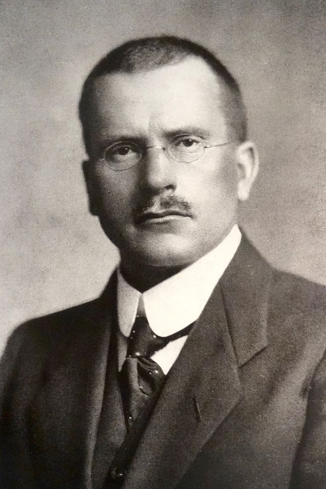
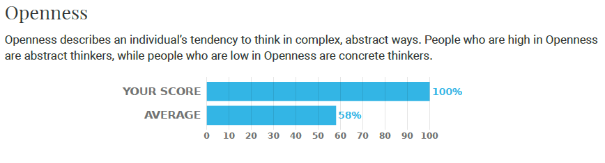
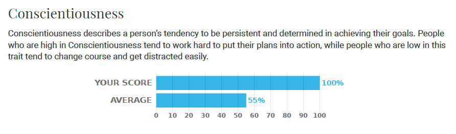
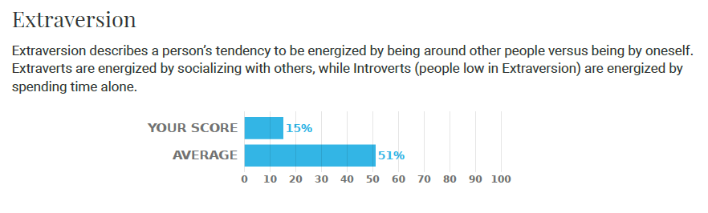
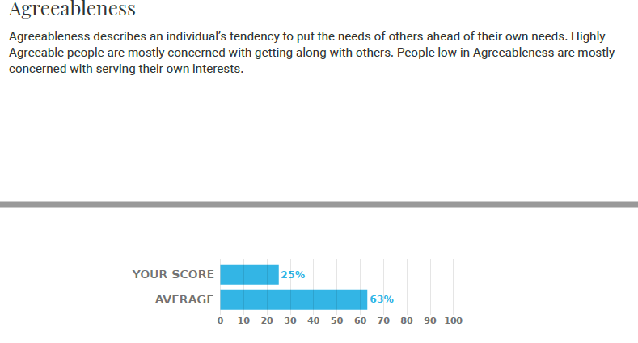
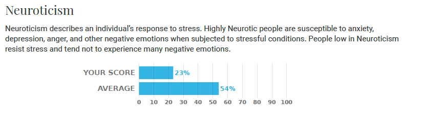

People who have interacted with me would describe me as reserved. I am intoverted and so, I prefer my own company. I am a calm and rational person. For the most part, I am not very expressive when interacting with others. Some consider this trait to be negative, but my family and close friends don't mind. I would consider myself to be an intellectual as I tend to be analytical and I am constantly thinking. In my pastime I enjoy reading and coding. My favorite books to read often center around Psychology or Philosophy. I enjoy books like these because they introduce me t novel ideas and more profound topics.
My favorite psychologist and role model is Carl Jung. His psychological method emphasizes on increasing self-understanding and bringing our subconcious to conciousness. My favorite quote from Jung is "The world will ask you who you are, and if you don't know, the world will tell you." This quote made be realize the importance of seeking to become who I truly am in order to not just be a mere copy of everyone else.

Carl Jung - Swiss Psychologist
OCEAN Personality Test
The Big Five (OCEAN) personality test evaluates candidates across five personality traits: openness to experience, conscientiousness, extraversion, agreeableness, and neuroticism.
My Results
The results below accurately describes my personality. I am calm, introverted, hard-working and a critical thinker
    